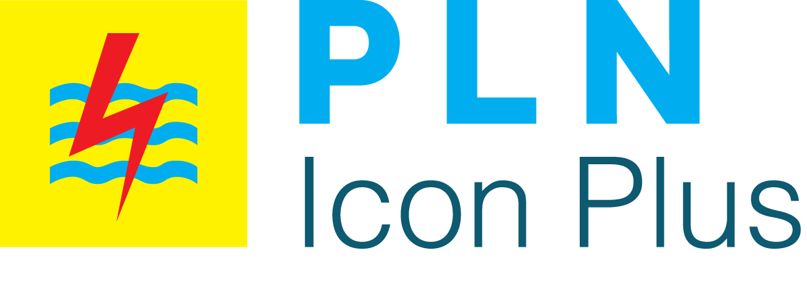
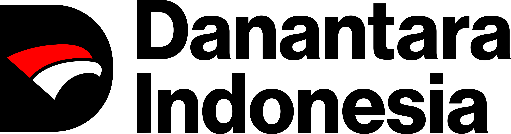

Search
Menemukan jawaban dari sumber.


Bagaimana AI mengubah produktivitas, cara kerja, dan pengelolaan perusahaan
Menemukan jawaban dari sumber.
Memperkirakan apa yang mungkin terjadi.
Membuat draf teks, gambar, atau kode.
Membantu satu tugas sesuai instruksi.
Menjalankan beberapa langkah menuju tujuan.
Sekitar 60% pekerja di organisasi responden memiliki akses ke alat AI yang disetujui organisasinya—bukan satu merek tertentu.
66% organisasi responden melaporkan peningkatan produktivitas atau efisiensi setelah menggunakan AI.
25% pemimpin menilai AI sudah mengubah bisnis secara mendasar—naik dari 12% setahun sebelumnya.
Semua angka berasal dari survei yang sama, tetapi mengukur hal berbeda: akses pekerja, manfaat organisasi, dampak bisnis, dan kesiapan AI agent.
AI merangkum laporan, email, dan dokumen.
AI menyiapkan draf proposal, presentasi, atau tanggapan.
AI membantu melihat pilihan, pola, dan risiko.
AI merapikan bahan rapat dan alternatif keputusan.
AI membantu mengubah berkas atau menjalankan tugas rutin.
Menentukan prioritas, proses kerja, pelatihan, dan kebijakan.
Pekerjaan apa yang harus menjadi lebih cepat?
Waktu yang dihemat akan digunakan untuk apa?
Bagaimana hasil AI akan diperiksa?
Tugas dan keterampilan apa yang berubah?
Data dan tindakan apa yang harus dibatasi?
Total biaya tenaga kerja per bulan
Nilai waktu pada pekerjaan administratif
Nilai waktu yang bisa dipakai untuk pekerjaan lain
Manusia memberikan instruksi pada setiap langkah.
Manusia menetapkan tujuan, aturan, dan kapan hasil harus disetujui.
Tujuan dan kode yang sudah ada.
Langkah dan berkas terkait.
Kode, konfigurasi, dokumen.
Pengujian dan pemeriksaan kualitas.
Hasil, risiko, dan tindak lanjut.
AI mempercepat pekerjaan. Manusia memahami konteks, memeriksa kualitas, dan mengambil keputusan.
Jawaban yang terdengar meyakinkan, tetapi salah atau tidak didukung sumber.
Apakah sumbernya tersedia?
Apakah jawaban didukung dokumen?
Apakah angka, nama, dan tanggal diperiksa?
Siapa yang menyetujui hasilnya?
Publik · tanpa tindakan
Internal · analisis saja
Mempengaruhi keputusan
Data + sistem + perubahan
Batas yang jelas menentukan apa yang boleh, apa yang wajib diperiksa, dan siapa yang bertanggung jawab.
Boleh digunakan? Aman? Hak pemiliknya terjaga?
Andal? Aman? Ada pihak yang bertanggung jawab?
Terbuka? Bertanggung jawab? Privasi dan hak cipta terjaga?
Pilih pekerjaan prioritas, pengguna, alat, batas, dan penanggung jawab.
Masukkan AI ke proses kerja sehari-hari.
Bandingkan waktu, jumlah pekerjaan, kualitas, dan insiden sebelum–sesudah.
AI membantu kita bekerja lebih cepat.
Keputusan tetap di tangan manusia.